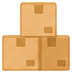
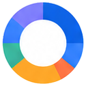
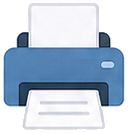

アプリ不要・登録不要でブラウザだけで完結する引越しToDoリストが選ばれる理由。
スマホもPCもインストール不要。URLを開いてすぐチェックリストが使えます。登録・ログインも一切不要。

引越し日を入力するだけで「8週前→前日→当日→引越し後」の時系列タスクを自動生成します。
引越しまでの残り日数を大きく表示。「あと○日」で計画的に準備できます。引越し後は自動的に0日表示。

ドーナツグラフと棒グラフで進捗率を視覚化。完了タスク数と残タスクが数字でも一目で確認できます。

URLを家族やパートナーに共有できます。さらに独自タスクを自由に追加してオリジナルリストを作成可能。


電気・ガス・水道・インターネットの停止と開始、役所への転出届・転入届まで、必要な手続きをすべてカバー。
家族構成や引越しの状況に合わせてタスクが最適化されます。

初めての一人暮らし引越しでも安心。役所手続き・ライフライン・荷造りのToDoを一括管理できます。
学校・保育園の転校転園手続きなど、ファミリー特有のタスクを自動追加。家族全員で共有も可能。

ペット連れ特有の「動物病院の転院」「ペット預かり先の確認」などもテンプレートで即追加できます。
難しい設定は一切不要。引越し日を入力するだけで今日から使えます。
引越し予定日・家族構成（単身/カップル/ファミリー）・引越し距離を選んで「チェックリストを作成」をタップ。
「8週前〜引越し後」の時系列ToDoが自動生成。独自タスクを追加してあなた専用のリストに仕上げられます。
完了したタスクにチェックを入れるたびに進捗グラフがリアルタイム更新。カウントダウンを見ながら計画的に。
初めての一人暮らし引越しで何をすればいいか全くわからなかったのですが、日付を入力するだけですべてリストアップされて感動！役所への転出・転入届のタイミングも逆算してくれて助かりました。
✓ 役所手続き漏れなし子供の転校手続きも含めてすべてカバーされていました。夫婦でURLを共有してどちらが何をやるか分担できたのも便利でした。進捗グラフがあるのでゲーム感覚で準備が進みました！
✓ 家族でタスク分担電気・ガス・水道の手続きをまとめて管理できるのが最高でした。アプリのインストール不要でスマホからすぐ開けるので、隙間時間に確認するのに最適です。カスタムタスクも助かりました。
✓ ライフライン手続き完了電気・ガス・水道・インターネットの停止・開始申請まで、すべての手続きをタイムラインで管理。忘れがちな手続きもリストに含まれています。
引越し作業中の隙間時間に、スマホでタップするだけでチェックできる設計。PC・タブレットでも快適に使用できます。
引越し日を入力するだけで、役所手続き・ライフライン・荷造りの全ToDoが自動生成。完全無料・登録不要ですぐ使えます。